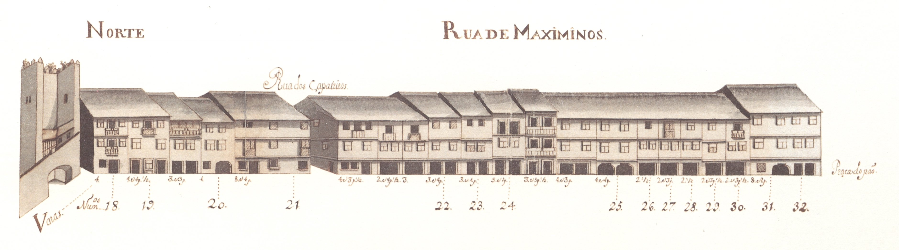
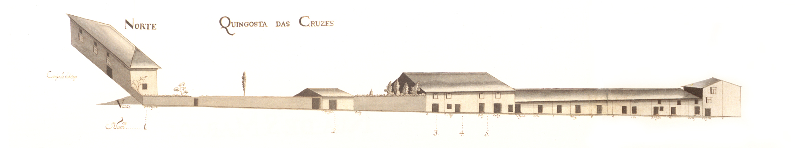

Rua do Campo

Rua Nova

Rua dos Açougues velhos

Praça do Pão

Rua das Oucias

Rua do Souto Porta do Souto

Loura e Terreiro do Castelo

Rua de Janes

Rua de S.João

Travessa da Rua de S. João para a do Forno

Rua dos Cegos ou do Forno

Travessa Da Rua Do Forno Para A Do Poco

Rua Pequena

Rua de Sta. Maria ou do Poço

Travessa da Rua do Poço para a de D.Gualdim

Rua de D. Gualdim

Travessa da Rua de D.Gualdim até ao Couto do Arvoredo

Rua das Chagas

Rua de Sto. António

Terreiro de Sto. António e Postigo

Rua Verde

Rua de Maximinos

Rua dos Sapateiros e Rossio da Praça

Rua da Vielinha

Campo de S. Sebastião e em Frente do Açougue

Rua de S.Miguel O Anjo

Rua Da Cruz De Pedra

Rua Direita

Rua do Beco

Cangosta De S. Sebastião

Rua do Alcaide

Rua dos Pelames

Campo de S. Tiago

Cangosta das Cruzes

Rua de S. Marcos

Rua das Águas

Rua de S. Lázaro

Rua da Ponte de Guimarães

Ponte de Guimarães

Rua do Paymanta

Campo de Santa Ana

Campo e Calçada de Nossa Senhora a Branca

Campo de Nossa Senhora a Branca. Rua da Régua. Rua Nova da Seara

Rua da Fonte da Carcova
.jpg)
Rua dos Chãos de Baixo
.jpg)
Rua de Santo André
.jpg)
Rua de S. Barnabé
.jpg)
Praça do Gavião

Rua de S. Gonçalo

Rua de Nossa Senhora de Guadalupe

Rua Da Oliveira

Rua em Frente de Nossa Senhora de Guadalupe

Rua dos Chãos de Cima

Rua das Palhotas

Rua de Infias

Cangosta da Escoura

Estrada de Real

Rua da Cónega

Rua dos Biscaínhos

Cangosta da Rua das Águas